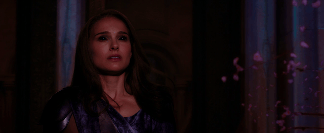
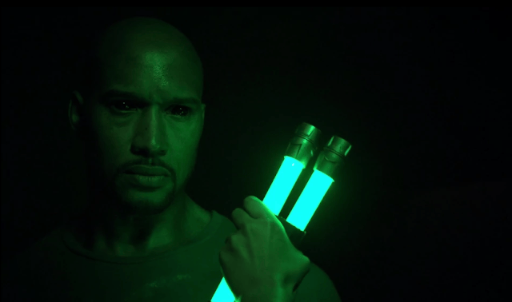
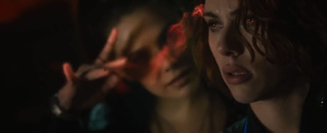
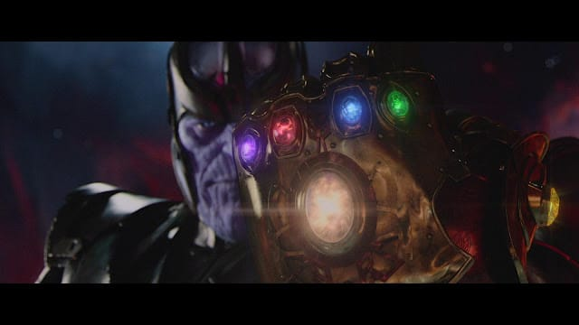

Motto: What a Marvelous Continuation
Preface:
Nearly 4 years ago, I wrote this long post about the Marvel Cinematic Universe (as it existed then). In that post, I made several predictions, which may or may not have come true, and several statements, which now I may or may not disagree with. Since then, a lot has happened. The MCU has expanded. Another guy named Aaron and I made a Spreadsheet. I made a video you’ll see later. Everyone has become familiar with the shared-universe concept.
Thor: Ragnarok just came out. Last time I wrote this it was after the release of the previous Thor movie. It seems like a good time to go back to the well. This is my update to that post.
A Brief History of the Marvel Cinematic Universe:
The MCU is a series of movies, shows, web series, and comic books produced by Marvel Studios that exist in the same shared universe, each telling their own story while contributing to a greater, overarching narrative. Specifically, this:
{kind=link}
…and this…
{kind=link}
Those are all the current and (and some of the future) canonical MCU movies & shows. I didn’t include the tie-in comic books, web mini-series, Marvel One-Shots, or the upcoming TV shows on other networks in that graphic because they’d double its current size.
A quick word of warning: my writing will assume you’ve already seen everything to date and will include spoilers for those who haven’t.
Why is This such a Big Deal?
Comic books have a long history of using a shared universe, a continual continuity. The people, locations, and plotlines from one story connect to the other stories… Each entry into the universe tells its own story, but also serves to further the overarching narrative, affecting all subsequent stories. This concept is obvious, but for some reason nobody had successfully done that on-screen until Marvel starting in 2008 The MCU is the brainchild of Kevin Feige, a dude whose hand I’d love to shake one day.
{kind=link}
Four years ago, I listened to Kevin Fiege on the Nerdist Podcast. I was nervous going into it. Nervous that he’d be weird, or antisocial, or otherwise unlikable. I was pleasantly surprised! He was as entertaining as he was knowledgeable. It’s worth a listen still if you’re interested to hear how the MCU came about & hear a weird snapshot in time where where they had JUST announced that Avengers 2 would be Avengers: Age of Ultron.
Predictions (Past & Present)
In my previous post I made some bold predictions about the future of the MCU. That future has become the past, and my predictions have, on the whole, not at all come true. Good job me! This is an update to the predictions I made on November 25th, 2013:
{kind=link}
I now present my new predictions - in handwritten, vertical format for stylistic symmetry:
{kind=link}
There’s so much now, that’s kind of tough to read. Basically - I’m guessing Ant-Man 3 will happen, as will Doctor Strange 2, Adam Warlock & Namor will get a movie, Black Widow will lead an all-female Avengers movie, and we’ll have an Avengers 5 dealing with the Skrulls. If I get two of those guesses correct, I’ll be happy.
Critical Reception & My Opinions
Rotten Tomatoes:
94% - Iron Man
93% - Thor: Ragnarok
92% - Spider-Man: Homecoming
92% - Marvel’s The Avengers
91% - Guardians of the Galaxy
90% - Captain America: Civil War
89% - Doctor Strange
89% - Captain America: The Winter Soldier
82% - Ant-Man
82% - Guardians of the Galaxy Vol. 2
80% - Captain America: The First Avenger
79% - Iron Man 3
77% - Thor
75% - Avengers: Age of Ultron
73% - Iron Man 2
67% - The Incredible Hulk
66% - Thor: The Dark World
I think Thor: Ragnarok will come down a few percent over time. It’s still opening weekend right now.
I have ranked & re-ranked things over and over. Most recently about 2 months ago. Doing this is like making Sophie’s choice. Every time I do it, I think “ah! NO! I can’t have _____ movie be the 7th highest! I LOVE that movie!”. Then I shift them around and the movie I replace it with gives me the same problem. I try to get around that by assigning a “tier” system.
Aaron:
Elite - Captain America: Civil War
Elite - The Avengers
Elite - Captain America: The Winter Soldier
Elite - Spider-Man: Homecoming
Elite - Guardians of the Galaxy
Upper - Iron Man
Upper - Thor: Ragnarok
Upper - Guardians of the Galaxy Vol. 2
Upper - Avengers: Age of Ultron
Upper-mid - Ant-Man
Upper-mid - Captain America: The First Avenger
Upper-mid - Thor
Mid - Doctor Strange
Mid - Iron Man 3
Mid - Iron Man 2
Mid - The Incredible Hulk
Lower-mid - Thor: The Dark World
Fun fact: in my previous MCU post I ranked Thor: The Dark World as the 3rd best of the 8 movies that were out at the time.
Last time I wrote, Agents of S.H.I.E.L.D. was the only TV show airing. Now, that’s definitely not the case. Enough seasons of TV have aired in the past 4 years to make a TV-specific ranking!
Rotten Tomatoes:
100% - Agents of S.H.I.E.L.D. Season 3
98% - Daredevil Season 1
96% - Luke Cage
95% - Agents of S.H.I.E.L.D. Season 2
95% - Agent Carter Season 1
95% - Daredevil Season 2
93% - Agents of S.H.I.E.L.D. Season 4
92% - Jessica Jones
85% - Agents of S.H.I.E.L.D. Season 1
81% - Agent Carter Season 2
74% - The Defenders
17% - Iron Fist
8% - Inhumans (it deserves this score)
Aaron:
Elite - Agents of S.H.I.E.L.D. Season 4
Elite - Jessica Jones
Elite - Agents of S.H.I.E.L.D. Season 3
Elite - Daredevil Season 1
Upper - Agents of S.H.I.E.L.D. Season 2
Upper - Agent Carter Season 1
Upper - Luke Cage
Upper - Daredevil Season 2
Upper-mid - Agents of S.H.I.E.L.D Season 1
Mid - The Defenders
Lower-mid - Agent Carter Season 2
Lower - Iron Fist
Garbage - Inhumans
Appreciation
Consistency. Marvel has put out 17 movies. Every single movie has debuted #1 at the Box Office in its opening weekend. Every single movie has been a financial success. Every single movie has had more positive reviews than negative ones. The worst of the 17 is still very entertaining. I’d be game to watch it right now. I’m actually going to put it on as I write more.
{kind=link}
It’s all connected! It’s awesome to me how every single story can be written in a way that fits into this broader universe. It’s incredible to think that Rocket Raccoon and Jessica Jones could do a double-jumping high-five with Ghost Rider. I like how the implications or fallout from a movie informs subsequent movies & shows. SHIELD fell in Captain America: The Winter Soldier, and that inspired a season-long storyline in the Agents of S.H.I.E.L.D. TV show.
Honestly, there’s too much for me to write to try to cover everything I appreciate about this stuff. Here’s some smaller things I really like about consistencies:
There have been several instances of mind control int he MCU. Each time someone is being fully controlled, we are cued in by the same visual effect:
{kind=link}
 |
|---|
| Jane Foster in Thor: The Dark World |
 |
|---|
| Mack in Agents of S.H.I.E.L.D. |
{kind=link}
Now - there’s another instance of mind-alteration eyeball cues… In The Avengers: Age of Ultron we see the influence of Scarlet Witch’s hexes in the eyes of all of the Avengers. Since she doesn’t really control their mind, it’s a different effect:
 |
|---|
| Scarlet Witch making Black Widow relive her time in the Red Room |
{kind=link}
Another consistency that I like is the sound effects across the universe. I put together this little video to show you what I mean:
As I’m about to transition from good stuff to bad stuff - here’s my awesome segue. I really love the original Guardians of the Galaxy trailer:
…but I HATE how many other trailers have come out since then that have utilized the “take an old song and modify it for use in this trailer to make you think if you like the song you’ll probably like the movie” thing.
That said, the soundtrack (note: not the score - we’ll get to that later) of the MCU is fantastic.
Evidence 1.
Evidence 2.
Evidence 3.
Criticisms
As fantastic as the Marvel movies & shows are - like anything, you can find some things that could be better.
First and foremost - Marvel is known for their heroes, not their villains. You could argue they are a bit hamstrung due to the fact the rights to their best villains belong to Fox & Sony. The net result is the majority of movies thus far have had underdeveloped villains whose motivations were not set up, whose names weren’t important enough to remember, and who were killed off after one movie. In most movies, the villain is just “a guy who does the same thing as the hero, but uses it for evil.” Here’s a helpful graphic:
{kind=link}
In addition to history of middle-of-the-road-at-best villains, the Marvel movies largely have a similar-ish feel. They balance action scenes with jokey moments. They have characters make quips in otherwise serious situations. Ultron should have been a downright terrifying villain, but he turned into Tony Stark. Both Guardians of the Galaxy movies have a joke moment seconds before the main villain is defeated. There are exceptions to this rule - notably the Captain America movies tend to be more somber. I don’t really get bothered by this, because it makes for a great movie-going experience.
This next bit probably doesn’t bother the average person, but it does bother me.
It’s all (not) connected.
The movies acknowledge only the events of the movies.
The shows on ABC acknowledge only the events of a couple key movies early on and other shows on ABC (and God I hope they ignore the Inhumans show).
The Netflix stuff acknowledges only the events of The Avengers & other Netflix series.
I’m going to guess that, as additional silos pop up (when Hulu gets their show, and Disney’s streaming service gets its own show, etc) they will continue to ignore the other silos. The only thing everyone in the MCU can seem to agree on is that Tony Stark, the Hulk, Thor, and Captain America fought aliens in New York at some point.
Another big criticism - the elephant in the room that everyone should just forget about:
{kind=link}
This show is technically canon to the MCU now. It’s garbage. The writing. The directing. The acting isn’t great, but they weren’t given anything to work with, so it’s hard to blame them. Just the writing. It’s so terrible. I don’t want to get into it here, maybe I’ll write an entire post about how bad this is a la Flightplan. Suffice it to say: Inhumans was awful. I legitimately think an average freshman in film school would have done a better job given the same resources.
My last criticism - the score. This video does a better job of explaining the criticism than I ever could:
Note - Melissa complained about this same thing all the way back in days of the original “Thor”, which she saw with her class studying film music.
Thanos
Ever since the post credits sequence in The Avengers, the game has been on.
Who’s Thanos? What’s his deal?
When I originally wrote this, I think those questions were a little less obvious. Now I’d be willing to guess most people reading this already know. Nevertheless… LET’S GET INTO IT!
Thanos is the big bad.
He’s the villain above and beyond all villains.
He’s “the most powerful being in the universe” according to one source in canon.
In the movies, we were technically introduced to him in the (the best of all time) post-credits scene from “Marvel’s The Avengers”. We were further introduced to him in “Guardians of the Galaxy” where Korath says that “most powerful” line from before, and Thanos tells Ronan The Accuser that he’s insignificant and boring.
Thanos is the center of the comic book storyline “The Infinity Gauntlet”, which I have not read… but I have read the Wikipedia Plot Summary, which is about as close to reading comics as I routinely get… because I don’t expect most people to even give that a go - allow me to summarize that summary:
The inciting incident of that storyline is that Thanos develops himself a crush… on Marvel’s character “Death”, who is sometimes just the Grim Reaper, sometimes a pretty lady.
{kind=link}
He likes her. He wants to get her a present. So he gathers the Infinity Gems. Puts them in a he kills half of the living beings in the universe, with a literal snap of the fingers. This is a nice present, but understandably makes the other half of the universe fairly bothered. So they fight him. Thanos says “psh, you guys will have to roll a 21 to beat me” and they roll at 21. That’s not the real ending, but it makes about as much sense.
How will this get translated to “Avengers: Infinity War”?
Who knows.
Thus far, we don’t really know much about MCU Thanos. We don’t have much information other than what I said up there, and POSSIBLY that he’s in love with Death. At the end of Marvel’s The Avengers the Other One tell Thanos that fighting humans is “to court Death”. His response is this:
{kind=link}
To me, that smile says “oh, dude, I’m totally down to court Death with a capital D”. That is pretty key to his character in the comics and I hope it gets translated to the MCU.
There is a chance we may have already met “Death with a capital D”.
{kind=link}
Hela from “Thor: Ragnarok” is the Goddess of Death. That could be the direction they are setting up. It would be easy to revive Cate Blanchett’s character. I mean she’s the Goddess of Death - how can she die? Who’s going to take her away to the afterlife?
Quick aside - Thor: Ragnarok was spectacular. Probably some of the best visuals in ALL of the MCU. Plus it was funny. Plus the action.
There’s another question - how many of Thanos’ insane list of powers & abilities are going to make it to his big screen version? In the comics Thanos is literally given all the powers of God once he’s got the glove… but I don’t imagine they’ll do that. They really toned down Ultron - who isn’t all that far off from being unstoppable in the comics. In “Avengers: Age of Ultron” he quickly lost his “I’m invincible thanks to the internet” power. I think they’ll likely do the same for Thanos… or maybe not. They showed an advanced screening of the “Avengers: Infinity War” trailer at San Diego Comic Con and apparently he literally pulls pieces of the moon from the sky and throws them at the Avengers. He’s still using a glove, after all:
…and the movies have been very clear that he’s been trying to gather all six Infinity Stones. Which brings me to my next, and final point.
The Infinity Stones
Here’s what’s been said of the Infinity Stones thus far:
“Before creation itself, there were 6 singularities. Then the universe exploded into existence and the remnants of these systems were forged into concentrated ingots, the Infinity Stones.”
- The Collector, “Guardians of the Galaxy” -
“There are relics that predate the universe itself … an ancient force of infinite destruction.”
- Odin, “Thor: The Dark World” -
“The Mind Stone is the 4th of the Infinity Stones to show up in the last few years. It’s not a coincidence. Someone is playing an intricate game and has made pawns of us.”
- Thor, “The Avengers: Age of Ultron” -
The Space Stone:
{kind=link}
In the comics, the Space Gem allows its user to warp space, teleport themselves or any object to wherever, change distances, and basically grants Omnipresence.
In the movies, the Space Stone (a.k.a. the “Tesseract”) was technically introduced in “Captain America: The First Avenger”, although it was not identified as an Infinity Stone until “Marvel’s The Avengers”. From what we’ve seen the Space Stone allows its user to open up portals in space. Also, either little pieces of it or technology inspired by it powers the Hydra weapons in the first Captain America movie.
Right now in MCU canon the Space Stone is most likely in possession of Loki, following the events of “Thor: Ragnarok”.
The Mind Stone:
{kind=link}
In the comics, the Mind Gem allows its user to read peoples thoughts and control them.
In the movies, the Mind Stone was technically introduced in “Marvel’s The Avengers”, although it was not identified as an Infinity Stone until “The Avengers: Age of Ultron”. From what we’ve seen the Mind Stone allows its user complete mind control over an untold number of other individuals (although its affects can apparently be undone by a good smack to the head). It also is The Vision, to some extent, and can shoot some form of energy beam from his head capable of melting Vibranium & really ruining War Machine’s day.
Right now in MCU canon the Mind Stone is in the Vision’s forehead.
The Reality Stone:
{kind=link}
In the comics, the Reality Gem allows its user to fulfill wishes & alter reality on a universal scale.
In the movies, the Reality Stone (a.k.a. the “Aether”) was introduced in “Thor: The Dark World”, where it is described as having “the ability to turn matter into dark matter” and supposedly the capability to turn the 9 realms into darkness. We also witness Malekith using the power of the Aether to shoot red squiggly beams at Thor, although Thor seemed mostly fine after being hit with them.
Right now in MCU canon the Reality Stone is in The Collector’s collection.
The Power Stone:
{kind=link}
In the comics, the Power Gem allows its user enhanced strength and durability, and it lets them manipulate all forms of energy. Also it boosts the effects of the other Infinity Gems when they are used in conjunction. It grants its user Omnipotence.
In the movies, the Power Stone was introduced in “Guardians of the Galaxy”, where it was shown to kill any beings not powerful enough to touch it. We see an celestial use it to blow up an entire planet. Also its used in the climax of the film to kill Ronan.
Right now in MCU canon the Power Stone is in the Nova Headquarters on Xandar.
The Time Stone:
{kind=link}
In the comics, the Time Gem allows its user to see into the future or the past, slow down, speed up, reverse, or travel through time, and also trap people in unending loops of time. It grants its user Omniscience.
In the movies, the Time Stone was introduced in “Doctor Strange”, where it was shown to do most of the same stuff it does in the comics. We see it slow down, stop, and reverse time. Also, we see it reverse time for a particular object, as opposed to all time for everything.
Right now in MCU canon the Time Stone is in the New York Sanctum, overseen by Doctor Strange.
The Soul Stone:
 |
|---|
| The Soul Stone is either the big one or the one on his thumb |
{kind=link}
In the comics, the Soul Gem allows its user to steal and/or corrupt people’s souls.
In the movies, we don’t even know if the 6th Infinity Stone will be called the Soul Stone. We don’t know what it does. It hasn’t been introduced yet, although technically we have seen it in a clip Marvel showed at Comic Con and in some other promotional materials. That’s what that picture is from.
I cannot look forward to May 2018 enough. I will spend all of April 2018 talking about how excited I am for May 2018. It’s my 4 year anniversary and Marvel’s Infinity War comes out. It’s going to be the Best of Times.
Alright! I’M DONE BABY!
Postface
I’m going to make this into a real feature. It’s going to be in the menu off to the left of the Column. It’ll be all this, plus moooore!
Top 5: Things I’m Hoping for in the MCU’s Future
5. I hope they continue trending the right direction in the villain department. It’s been several movies now since we’ve had a bland, uninteresting, unremarkable villain.
4. They learn their lesson from Iron Fist & The Inhumans. “Their lesson” is to not make any more anythings with Scott Buck as showrunner. The first show he did was bad. The second one was terrible.
3. Captain Marvel & Black Panther is awesome.
2. Tom Holland can continue to rock it as Spider-Man… and Sony gives up on doing Spider-Man stuff without Marvel’s involvement.
1. Marvel movies acknowledge Marvel TV… even once. Just have Coulson show back up again. Agents of S.H.I.E.L.D. is fantastic. Give its fans a nod. Make Tony Stark aware that Coulson is still alive.
Quote:
“Did you just say ‘Thor Fraggle Rock’?”
- Chuck -